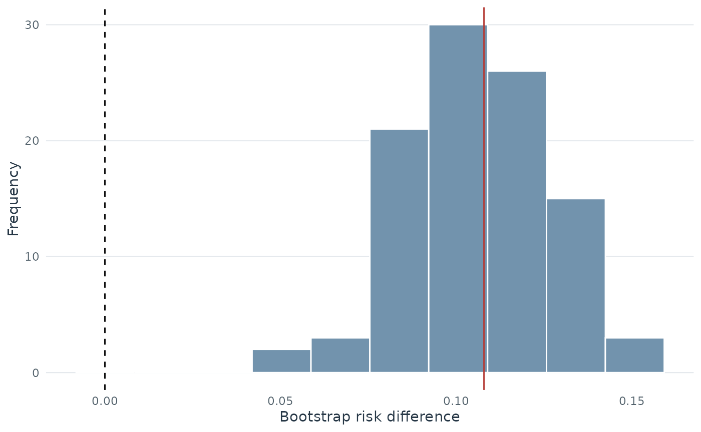
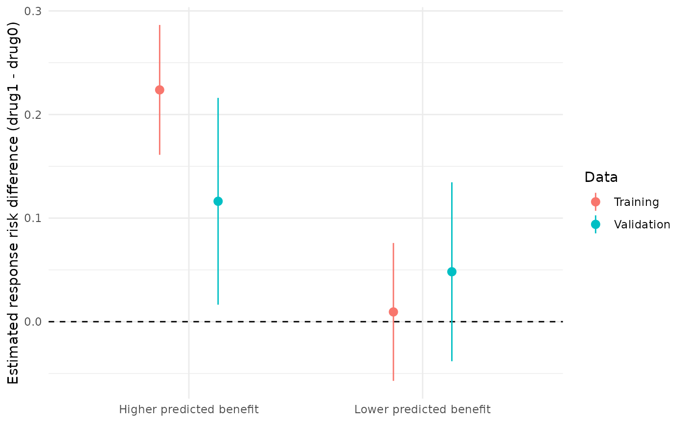

Estimating and validating treatment effects for binary outcomes
Source:vignettes/Binary-examples.Rmd
Binary-examples.RmdThis vignette follows a treatment-effect analysis from a simple comparison to an adjusted average treatment effect (ATE), conditional average treatment effect (CATE) scores, and validation in held-out data. The data are entirely synthetic. For an introduction to individualized treatment effect prediction with binary endpoints in randomized trials, see Hoogland et al. (2021). See the count example for the corresponding analysis of relapse rates and repeated cross-validation.
Example data
We simulate counts of relapses during one year using the same
data-generating model as simulate_count(). A patient is a
responder (y = 1) if they have no relapses; otherwise
y = 0. The underlying count is retained in
relapse_count. Everyone has the same follow-up, and
response is fully observed. Set threshold to a larger
integer to define response as at most that many relapses, or change
followup to study another fixed horizon.
binaryExample <- simulate_binary(n = 4000, seed = 2026,
followup = 1, threshold = 0)
head(binaryExample)
#> age female previous_treatment previous_cost previous_number_symptoms
#> 1 4.6853017 0 drugB -0.04071778 0
#> 2 -9.7172169 1 drugB -0.07763572 >=2
#> 3 1.2531430 1 drugA 0.38461438 0
#> 4 -0.7627391 1 drugB -0.45026280 0
#> 5 -5.9997565 0 drugC 0.55030741 1
#> 6 -22.6448013 1 drugB -0.59281629 1
#> previous_number_relapses trt y years relapse_count
#> 1 0 drug1 0 1 1
#> 2 0 drug0 0 1 1
#> 3 0 drug1 0 1 1
#> 4 0 drug1 1 1 0
#> 5 1 drug1 0 1 2
#> 6 1 drug0 1 1 0
table(binaryExample$trt, binaryExample$y)
#>
#> 0 1
#> drug0 855 1003
#> drug1 869 1273
prop.table(table(binaryExample$trt, binaryExample$y), margin = 1)
#>
#> 0 1
#> drug0 0.4601722 0.5398278
#> drug1 0.4056956 0.5943044Treatment is assigned using age and previous treatment, so the treatment groups need not be comparable without adjustment. Age is centered at 48 years and previous cost is centered at 13,824 USD and divided by 20,172 USD. The simulation coefficients are illustrative and are not clinical estimates. Unlike a count rate ratio, the response risk difference depends on the selected threshold and follow-up period.
Estimate the average treatment effect
For the estimators and their assumptions, see Methods for estimating average treatment effects.
Unadjusted treatment comparison
We first compare the observed response proportions under drug1 and drug0.
response_rates <- with(binaryExample, tapply(y, trt, mean))
response_rates
#> drug0 drug1
#> 0.5398278 0.5943044The unadjusted risk difference for drug1 versus drug0 is calculated by subtracting the response proportion for drug0 from that for drug1. A positive value means a higher observed response proportion under drug1. Here, the unadjusted risk difference is 0.054. This means the observed proportion of patients who remained relapse-free was 5.4 percentage points higher in the drug1 group than in the drug0 group; equivalently, the proportion experiencing at least one relapse was that much lower. This unadjusted comparison may reflect baseline differences between the groups rather than a genuine treatment effect.
The 95% confidence interval is 0.024 to 0.085, based on a normal approximation for two independent proportions.
Covariate-adjusted treatment comparison
Treatment assignment may differ according to baseline characteristics. We fit a multivariable binomial model adjusting for age, sex, previous treatment, previous medical cost, and previous relapses, as in the count example. The identity link estimates the risk difference directly (Naimi and Whitcomb 2020).
adjusted <- glm(
y ~ trt + age + female + previous_treatment + previous_cost +
previous_number_relapses,
data = binaryExample, family = binomial(link = "identity")
)
summary(adjusted)
#>
#> Call:
#> glm(formula = y ~ trt + age + female + previous_treatment + previous_cost +
#> previous_number_relapses, family = binomial(link = "identity"),
#> data = binaryExample)
#>
#> Coefficients:
#> Estimate Std. Error z value Pr(>|z|)
#> (Intercept) 0.5703967 0.0204141 27.941 < 2e-16 ***
#> trtdrug1 0.0973253 0.0170384 5.712 1.12e-08 ***
#> age -0.0056606 0.0009682 -5.846 5.02e-09 ***
#> female -0.0535246 0.0171345 -3.124 0.00179 **
#> previous_treatmentdrugB -0.0131217 0.0176378 -0.744 0.45690
#> previous_treatmentdrugC 0.0326664 0.0205354 1.591 0.11167
#> previous_cost -0.0398499 0.0163037 -2.444 0.01452 *
#> previous_number_relapses -0.0228496 0.0087874 -2.600 0.00932 **
#> ---
#> Signif. codes: 0 '***' 0.001 '**' 0.01 '*' 0.05 '.' 0.1 ' ' 1
#>
#> (Dispersion parameter for binomial family taken to be 1)
#>
#> Null deviance: 5468.8 on 3999 degrees of freedom
#> Residual deviance: 5397.6 on 3992 degrees of freedom
#> AIC: 5413.6
#>
#> Number of Fisher Scoring iterations: 3The adjusted risk difference for drug1 versus drug0 is captured by
the coefficient for trtdrug1 and estimated as 0.097 (95%
CI: 0.064 to 0.131). The interval is a model-based Wald interval. The
model assumes that the risk difference is the same at every covariate
value; under this assumption, the coefficient is also the risk
difference averaged over the study population. A causal interpretation
requires, among other assumptions, a correctly specified outcome model,
no unmeasured confounding, and adequate treatment overlap.
Population-level treatment comparison using
atefit()
atefit(response = "binary") estimates the difference in
response probability under drug1 and drug0. Positive values favor drug1
because response is desirable. The estimator combines a logistic outcome
model and a treatment model (the propensity-score model), which
estimates the probability of receiving treatment 1 given the covariates.
Under the usual identification and regularity assumptions, the estimator
is consistent if either model is correctly specified. Causal
interpretation also requires well-defined treatments, no unmeasured
confounding, and adequate treatment overlap. Bootstrap samples provide
uncertainty estimates. These synthetic counts do not in general imply an
exactly logistic response model; the treatment model is correctly
specified by construction in this example. Chapter 5, “Understanding and
defining causal effects,” discusses marginal and conditional causal
effects (Nguyen et al. 2026).
The outcome formula excludes treatment: atefit() adds
treatment and, by default, its interactions with the outcome covariates.
ps.model includes the treatment on the left. Treatment
labels are ordered as drug0 and drug1. There is no follow-up offset for
this fixed-horizon binary outcome.
outcome_formula <- y ~ age + female + previous_treatment + previous_cost +
previous_number_relapses
ps_formula <- trt ~ age + previous_treatment
output_atefit <- atefit(
response = "binary", data = binaryExample,
cate.model = outcome_formula, ps.model = ps_formula,
n.boot = 100, seed = 999
)
output_atefit
#> Average treatment effect (risk difference):
#>
#> estimate SE CI.lower CI.upper pvalue
#> risk.difference 0.1079285 0.0196987 0.06931972 0.1465372 4.278253e-08
#>
#> Estimated risks:
#>
#> estimate
#> 1 0.6052451
#> 2 0.4973167
coef(output_atefit)
#> risk.difference
#> 0.1079285
confint(output_atefit)
#> 2.5 % 97.5 %
#> risk.difference 0.06931972 0.1465372
plot(output_atefit)
risk0 and risk1 are the estimated marginal
response probabilities; risk.difference is drug1 minus
drug0. The plot shows the bootstrap risk differences, the full-sample
estimate in red and the null value zero as a dashed line. This example
uses only 100 bootstrap replicates to keep the vignette fast; use more
for an analysis. If a bootstrap model fails, the package reports
unavailable inference rather than silently dropping it. Augmented
estimates of risk are not constrained to lie within 0 and 1.
Compare risk differences
All three estimates compare drug1 with drug0 on the same absolute
probability scale. The unadjusted comparison describes the observed
treatment groups. The identity-link binomial estimate uses the outcome
model alone, whereas atefit() adds a propensity-score
correction. Differences between the adjusted estimates can reflect their
different models and assumptions. The unadjusted interval is based on
the two-proportion normal standard error. The binomial model uses a
model-based Wald interval; atefit() uses a Wald interval
based on its bootstrap standard error.
| Estimation method | Interpretation | Risk difference | 95% CI |
|---|---|---|---|
| Unadjusted observed proportions | Unadjusted observed group difference | 0.054 | 0.024 to 0.085 |
| Adjusted binomial identity-link model | Conditional; also marginal under the constant-difference model | 0.097 | 0.064 to 0.131 |
| Doubly robust atefit() | Marginal population-average difference | 0.108 | 0.069 to 0.147 |
The unadjusted difference compares the observed treatment groups; it
is not necessarily a causal marginal effect. The binomial model’s
coefficient is conditional on the included covariates and, because it
assumes the same risk difference for every patient, equals its
model-implied marginal difference. atefit() targets the
population-average difference without requiring a constant conditional
risk difference. Causal interpretations require the assumptions
described above.
A risk difference of 0.10 corresponds to 10 percentage points more responders under drug1. The intervals describe uncertainty around each estimate; they do not test whether the methods differ from one another.
Estimate CATE scores
CATE scores estimate the difference in response probability for
patients with different baseline covariates. The logistic
method fits one logistic model with treatment-covariate interactions;
twoReg fits separate logistic models in each arm. With the
same covariates and a full set of interactions, these are equivalent
parameterizations and should give the same fitted scores up to numerical
tolerance. The boosting method instead fits a Bernoulli
gradient boosting model in each treatment arm and subtracts the
predicted response probabilities. Five-fold cross-validation selects the
number of trees in each arm; tree.depth and
n.trees.boosting control the fitted trees. These scores are
model-based; the subgroup ATEs shown by catefit() use the
doubly robust estimator and the same data used to build the scores, so
they may be optimistic. Chapter 17, “Introduction to methods for
personalizing medicine,” discusses treatment effect heterogeneity and
CATE prediction (Hoogland et al.
2026).
output_catefit <- catefit(
response = "binary", data = binaryExample,
score.method = c("logistic", "twoReg", "boosting"),
cate.model = outcome_formula, ps.model = ps_formula,
higher.y = TRUE, prop.cutoff = c(0.5, 0.75, 1), seed = 999,
n.trees.boosting = 100, plot.gbmperf = FALSE, n.cores = 1
)
output_catefit
#> Estimated ATE in the nested subgroups:
#>
#> prop0.5 prop0.75 prop1
#> boosting 0.2284609 0.1651624 0.1079285
#> twoReg 0.1885092 0.1455664 0.1079285
#> logistic 0.1885092 0.1455664 0.1079285
#>
#> NULL
head(output_catefit$score.twoReg)
#> 1 2 3 4 5
#> 0.1494940561 -0.0684159431 0.0643461646 0.0001343911 0.1432787574
#> 6
#> -0.1195886110
output_catefit$ate.twoReg
#> prop0.5 prop0.75 prop1
#> 0.1885092 0.1455664 0.1079285
output_catefit$ate.boosting
#> prop0.5 prop0.75 prop1
#> 0.2284609 0.1651624 0.1079285For example, prop0.5 is the estimated ATE in the half
with the highest scores, using a sample quantile cutoff; ties can make
the subgroup larger. higher.y = TRUE selects higher risk
differences as favorable. If the binary outcome instead represents an
adverse event, use higher.y = FALSE.
Visualize the distribution of CATE scores
ggplot(data.frame(score = output_catefit$score.twoReg), aes(x = score)) +
geom_histogram(bins = 30, fill = "#7293AD", color = "white") +
geom_vline(xintercept = 0, linetype = 2) +
labs(x = "Predicted response risk difference (drug1 - drug0)",
y = "Patients") + theme_minimal()
Internally validate CATE scores
We illustrate validation with a single held-out split. We fit the two-regression score only in the training set, choose its median cutoff in that set, and apply the same fitted models and cutoff to the validation set. No validation outcomes enter score fitting or cutoff selection. A single split can be unstable; repeated cross-validation or an independent external dataset provides stronger evidence. Chapter 19, “Validation of prediction models for patient outcomes and individualized treatment effect,” discusses discrimination, calibration and decision accuracy, which require additional assessments beyond this subgroup comparison (Thao et al. 2026).
set.seed(101)
train_id <- sample(seq_len(nrow(binaryExample)), size = floor(0.7 * nrow(binaryExample)))
train <- binaryExample[train_id, ]
valid <- binaryExample[-train_id, ]
train_fit <- catefit(
response = "binary", data = train, score.method = "twoReg",
cate.model = outcome_formula, ps.model = ps_formula,
higher.y = TRUE, prop.cutoff = 1
)The current binary catefit() interface does not yet
provide a prediction method for new data. To apply its two-regression
score, refit the same two logistic models on the training data using
glm() and predict both potential response probabilities in
each set. The equality check verifies that these training predictions
reproduce the package score.
fit0 <- glm(outcome_formula, data = train, subset = trt == "drug0",
family = binomial())
fit1 <- glm(outcome_formula, data = train, subset = trt == "drug1",
family = binomial())
score_train <- predict(fit1, newdata = train, type = "response") -
predict(fit0, newdata = train, type = "response")
score_valid <- predict(fit1, newdata = valid, type = "response") -
predict(fit0, newdata = valid, type = "response")
stopifnot(isTRUE(all.equal(unname(score_train),
unname(train_fit$score.twoReg), tolerance = 1e-6)))
cutoff <- unname(quantile(score_train, 0.5))
train$subgroup <- ifelse(score_train >= cutoff, "Higher predicted benefit", "Lower predicted benefit")
valid$subgroup <- ifelse(score_valid >= cutoff, "Higher predicted benefit", "Lower predicted benefit")
table(train$subgroup, train$trt)
#>
#> drug0 drug1
#> Higher predicted benefit 443 957
#> Lower predicted benefit 829 571
table(valid$subgroup, valid$trt)
#>
#> drug0 drug1
#> Higher predicted benefit 207 358
#> Lower predicted benefit 379 256Compare treatment effects across responder subgroups
Estimate a doubly robust risk difference separately in each subgroup and each split. The validation estimates are independent of score development, but subgroup estimates still depend on adequate overlap and on the outcome or treatment model within each subgroup. Small subgroups, missing treatment arms, or rank-deficient fits can make estimates unavailable. Confidence intervals below use each subgroup’s bootstrap standard error and do not account for uncertainty in training the score or selecting its cutoff.
# Author: Thomas Debray <tdebray@fromdatatowisdom.com>
subgroup_effects <- function(data, split) {
groups <- c("Lower predicted benefit", "Higher predicted benefit")
do.call(rbind, lapply(seq_along(groups), function(i) {
fit <- atefit("binary", data[data$subgroup == groups[i], ],
cate.model = outcome_formula, ps.model = ps_formula,
n.boot = 50, seed = 200 + i)
data.frame(split = split, subgroup = groups[i],
n = sum(data$subgroup == groups[i]),
estimate = fit$risk.difference$estimate,
lower = fit$risk.difference$CI.lower,
upper = fit$risk.difference$CI.upper)
}))
}
comparison <- rbind(subgroup_effects(train, "Training"),
subgroup_effects(valid, "Validation"))
comparison
#> split subgroup n estimate lower upper
#> 1 Training Lower predicted benefit 1400 0.009431206 -0.05711395 0.07597636
#> 2 Training Higher predicted benefit 1400 0.223775132 0.16109858 0.28645169
#> 3 Validation Lower predicted benefit 635 0.048215004 -0.03814598 0.13457599
#> 4 Validation Higher predicted benefit 565 0.116244507 0.01644873 0.21604029
ggplot(comparison, aes(x = subgroup, y = estimate, color = split)) +
geom_hline(yintercept = 0, linetype = 2) +
geom_pointrange(aes(ymin = lower, ymax = upper),
position = position_dodge(width = 0.5)) +
labs(x = NULL, y = "Estimated response risk difference (drug1 - drug0)",
color = "Data") + theme_minimal()
Compare the higher- and lower-score subgroup estimates in the validation set, including their uncertainty, rather than judging the score solely by the training results. This illustrative comparison does not by itself establish that the difference between subgroup effects is statistically significant. Chapter 20, “Visualization and interpretation of individualized treatment rule results,” discusses responder diagnostics and treatment-rule interpretation (Jiang et al. 2026).